vmware安装centos环境设置静态的ip地址
有的时候我们为了学习测试，会在自己的笔记本上搭建虚拟机，今天我们来讲下在windows上如何安装centos环境并且设置静态ip，如果是土豪，可以直接到云上购买机器，本篇文章可以忽略。
- 笔记本主机IP为设置自动获取，不管什么情况下，不受虚拟机影响，只要连接外网就可以正常上网；
- 只要笔记本主机可以正常访问外网，启动虚拟机中的CentOS 7系统就可以正常访问外网，无需再进行任何设置；
- 虚拟机设置为固定IP，不管主机在什么网络环境下，是断网环境，还是连接任何网段访问外网的环境下，虚拟机的IP都固定不变，而且使用终端连接，始终不变，正常连接；
- 虚拟机的固定IP可以按照自己想设置的IP地址网段随意设置，比如我就想设置固定IP为192.168.2.2。
以上4点，网上我没有找到一个帖子可以达到我要求的效果，经过我这段时间研究，经过各种尝试，期间出现各种问题，测试稳定后，总结如下分享给大家，希望对大家有所帮助，少走弯路。 采用方式为NAT模式+固定IP的模式。
配置环境说明：主机为Win10家庭版，虚拟机为VMware Workstation 12 Pro中文版，虚拟机中的Linux系统为CentOS 7 64位。
设置虚拟机的网络连接方式
按照如下图设置，英文版的对照设置即可
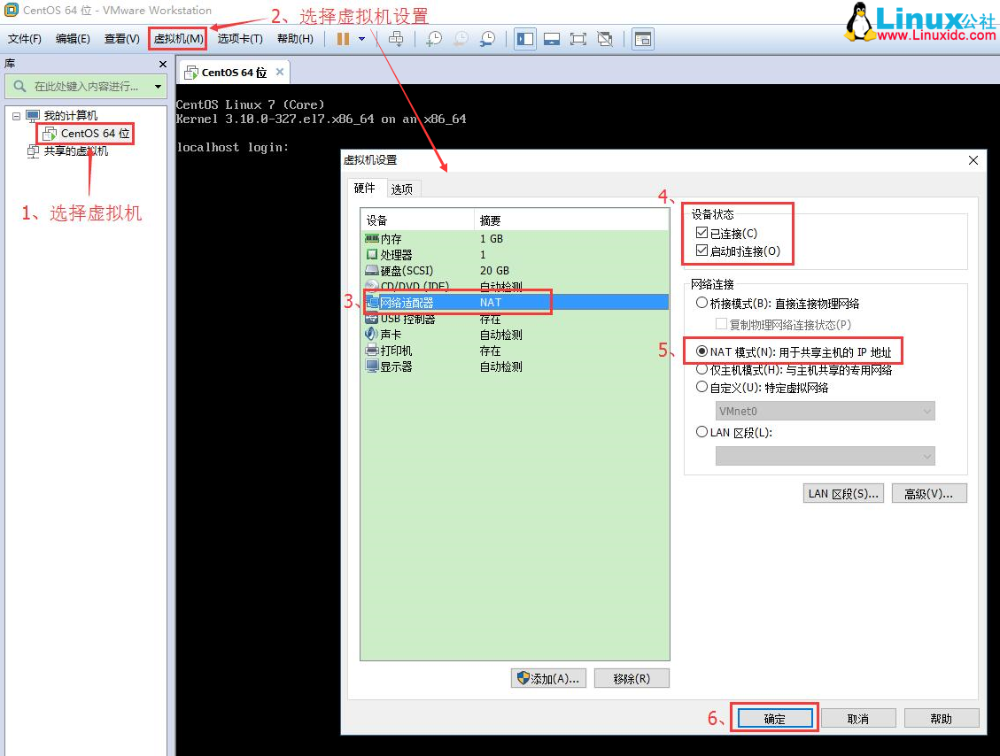
配置虚拟机的NAT模式具体地址参数
- 编辑--虚拟网络编辑器--更改设置
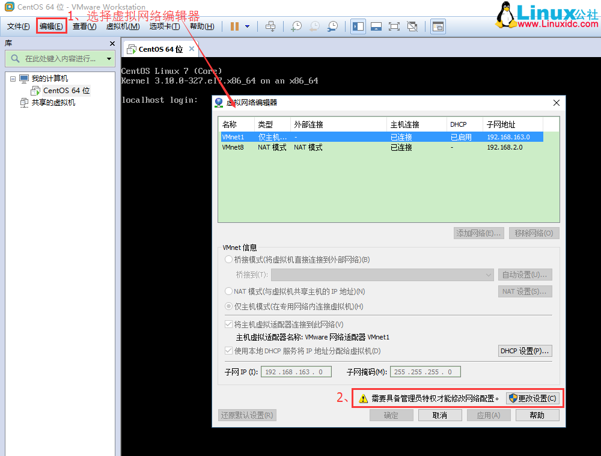
- 选择VMnet8--取消勾选使用本地DHCP--设置子网IP--网关IP设置（记住此处设置，后面要用到），如下图 说明：修改子网IP设置，实现自由设置固定IP，若你想设置固定IP为192.168.2.2-255，比如192.168.2.2，则子网IP为192.168.2.0；若你想设置固定IP为192.168.1.2-255，比如192.168.1.2，则子网IP为192.168.1.0；
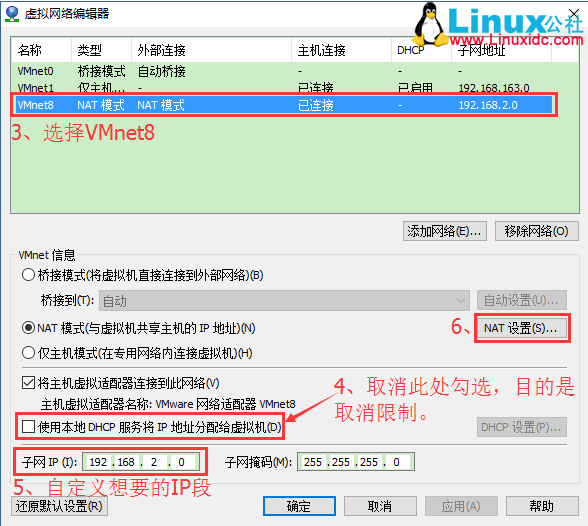
- 网关IP可以参照如下格式修改：192.168.2.1
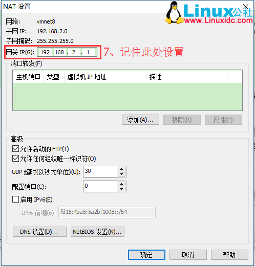
配置笔记本主机具体VMnet8本地地址参数
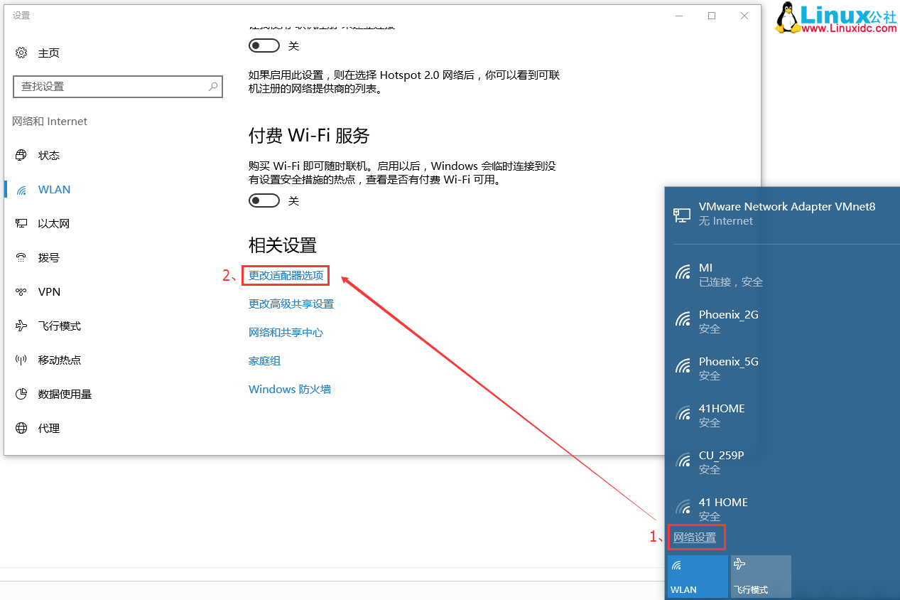
说明：第6步中的IP地址随意设置，但是要保证不能跟你要设置虚拟机的固定IP一样。
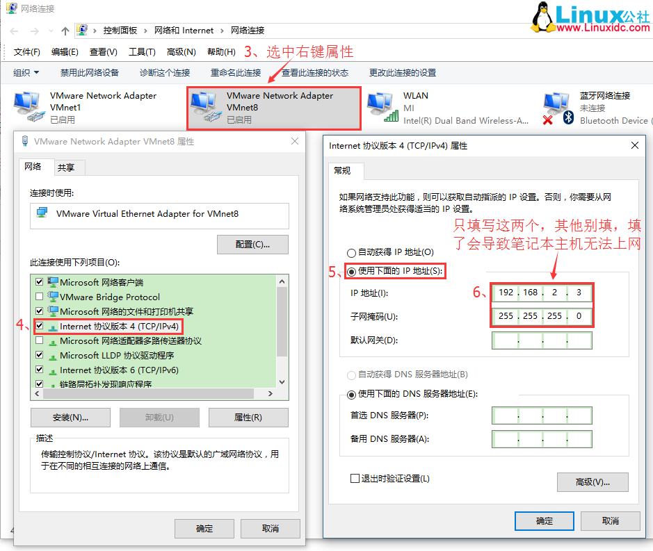
修改虚拟机中的CentOS 7系统为固定IP的配置文件
- 进入centos7命令行界面，修改如下内容
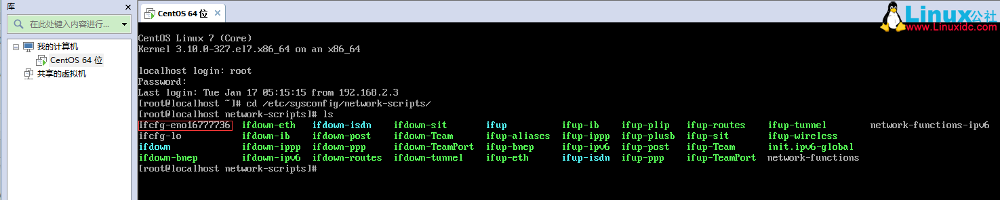
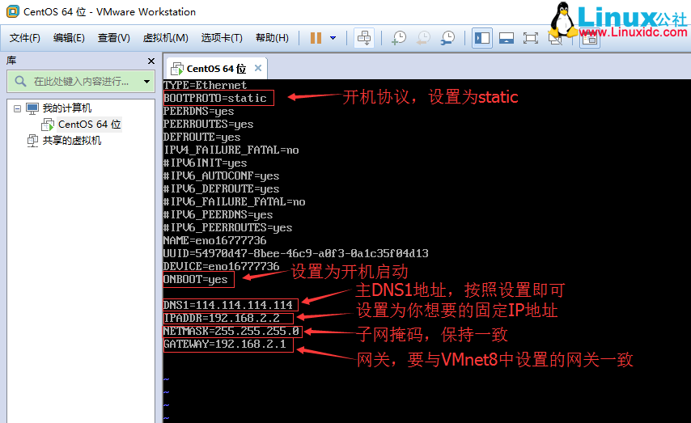
#cd /etc/sysconfig/network-scripts/
#vi ifcfg-eno16777736
说明：
#将IPV6…..协议都注释；
BOOTPROTO=static #开机协议，有dhcp及static；
ONBOOT=yes #设置为开机启动；
DNS1=114.114.114.114 #这个是国内的DNS地址，是固定的；
IPADDR=192.168.2.2 #你想要设置的固定IP，理论上192.168.2.2-255之间都可以，请自行验证；
NETMASK=255.255.255.0 #子网掩码，不需要修改；
GATEWAY=192.168.2.1 #网关，这里是你在“2.配置虚拟机的NAT模式具体地址参数”中的（2）选择VMnet8--取消勾选使用本地DHCP--设置子网IP--网关IP设置。
- 重启网络服务
service network restart
检验配置是否成功
- 查看修改后的固定IP为192.168.2.2，配置正确
ifconfig
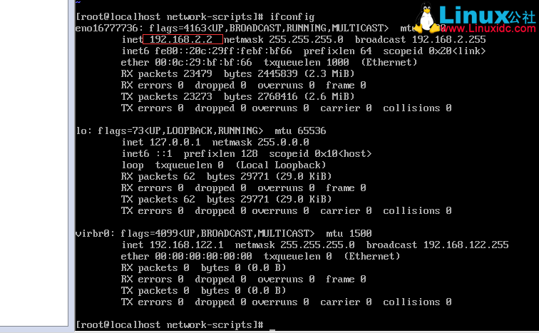
- 测试虚拟机中的CentOS 7系统是否能连外网，有数据返回，说明可以连接外网
ping www.baidu.com
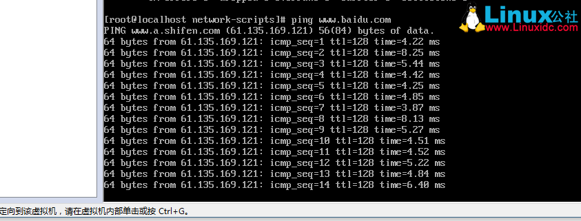
- 测试本机是否能ping通虚拟机的固定IP
有数据返回，说明可以使用终端工具正常连接
鼠标放到开始菜单右键，选择命令提示符（管理员），打开命令操作界面：
ping 192.168.2.2
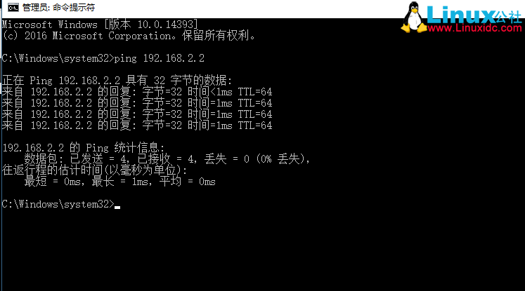
远程终端连接
- 若连接失败是因为CentOS 7的防火墙端口没有打开，比如开启80，3306端口，最后一定要重启防火墙
#查看防火墙状态
systemctl status firewalld
#开启80端口
firewall-cmd --zone=public --add-port=80/tcp --permanent
#开启3306端口
firewall-cmd --zone=public --add-port=3306/tcp --permanent
#重启防火墙：
firewall-cmd --reload
- 连接成功
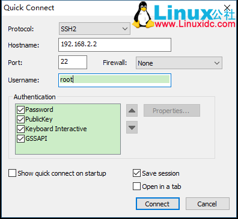
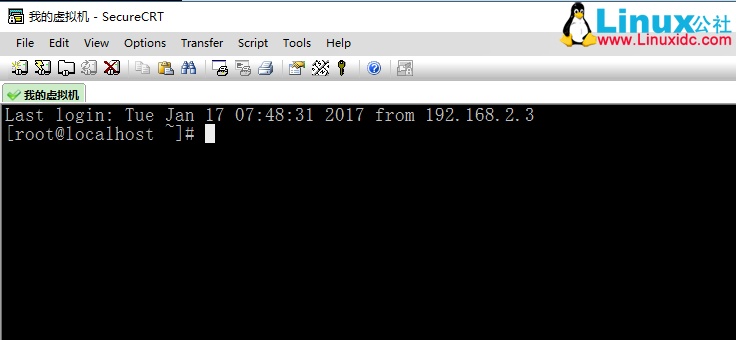